토목산업기사 (2015-03-08 기출문제)
1과목: 응용역학
1. 그림과 같은 구조물에서 BC 부재가 받는 힘은 얼마인가?
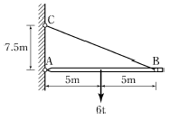
- 1.8tf
- 2.4tf
- 3.75tf
- 5.0tf
(정답률: 59%)

2. 길이 L=3m 의 단순보가 등분포하중 ω=0.4tf/m를 받고 있다. 이 보의 단면은 폭 12cm, 높이 20cm의 사각형 단면이고 탄성계수 E=10×105kgf/cm2 이다. 이보의 최대 처짐량을 구한 값은?
- 0.53 cm
- 0.36 cm
- 0.27 cm
- 0.18 cm
(정답률: 59%)
3. 다음 그림의 보에서 C점에 ΔC=0.2cm 의 처짐이 발생하였다. 만약 D점의 P를 C점에 작용시켰을 경우 D점에 생기는 처짐 ΔD의 값은?
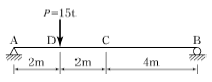
- 0.1cm
- 0.2cm
- 0.4cm
- 0.6cm
(정답률: 62%)
4. 그림과 같이 반원의 도심을 지나는 X축에 대한 단면2차모멘트의 값은?
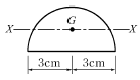
- 4.89cm4
- 6.89cm4
- 8.89cm4
- 10.89cm4
(정답률: 52%)
5. 직경 3cm의 강봉을 7,000kgf로 잡아당길 때 막대기의 직경이 줄어드는 양은? (단, 푸아송비 v=1/4, 탄성계수 E=2×106kgf/cm2)
- 0.00375cm
- 0.00475cm
- 0.000375cm
- 0.000475cm
(정답률: 62%)
6. 다음 중 단면계수의 단위로서 옳은 것은?
- cm
- cm2
- cm3
- cm4
(정답률: 78%)
7. 그림과 같은 사각형 단면을 가지는 기둥의 핵 면적은?
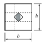
- bh/9
- bh/18
- bh/16
- bh/36
(정답률: 70%)
8. 그림의 보에서 C점의 수직처짐량은?
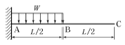
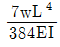
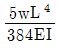
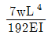
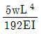
(정답률: 61%)
9. 길이 6m인 단순보에 그림과 같이 집중하중 7tf, 2tf가 작용할 때 최대 휨모멘트는 얼마인가?
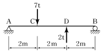
- 10.5tf⋅m
- 8tf⋅m
- 7.5tf⋅m
- 7tf⋅m
(정답률: 70%)
10. 지름 2cm, 길이 1m, 탄성계수 10,000kgf/cm2 의 철선에 무게 10kgf 의 물건을 매달았을 때 철선의 늘어나는 양은?
- 0.32mm
- 0.73mm
- 1.07mm
- 1.34mm
(정답률: 72%)
11. 탄성계수 E와 전단탄성계수 G의 관계를 옳게 표시한 식은? (단, v는 Poisson's비, m은 Poisson's수 이다.)
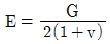
- E=2(1+v)G
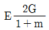
- E=0.5(1+m)G
(정답률: 65%)
12. 다음과 같은 단순보에 모멘트하중이 작용할 때 지점 B에서의 수직반력은? (단, (-)는 하향)
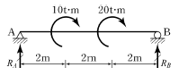
- 5tf
- -5tf
- 10tf
- -10tf
(정답률: 66%)
13. 그림과 같은 직사각형 단면에 전단력 S=4.5tf가 작용할 때 중립축에서 5cm 떨어진 a-a면에서의 전단응력은?
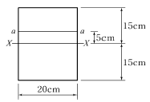
- 7kgf/cm2
- 8kgf/cm2
- 9kgf/cm2
- 10kgf/cm2
(정답률: 64%)
14. 그림과 같은 3힌지(hinge) 아치에 하중이 작용할 때 지점 A의 수평반력 HA는?
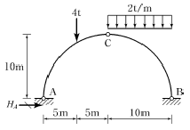
- 6tf
- 8tf
- 10tf
- 12tf
(정답률: 57%)
15. 부정정 구조물의 해석법인 처짐각법에 대하여 틀린 것은?
- 보와 라멘에 모두 적용할 수 있다.
- 고정단모멘트(Fixed End Moment)를 계산해야 한다.
- 지점침하나 부재가 회전했을 경우에도 사용할 수 있다.
- 모멘트 분배율의 계산이 필요하다.
(정답률: 66%)
16. 다음 중 지점(Support)의 종류에 해당되지 않는 것은?
- 이동지점
- 자유지점
- 회전지점
- 고정지점
(정답률: 67%)
17. 반지름 r인 원형단면 보에 휨모멘트 M이 작용할때 최대 휨응력은?
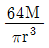
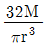
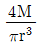
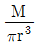
(정답률: 57%)
18. 그림(A)와 같은 장주가 10tf 의 하중에 견딜 수 있다면 (B)의 장주가 견딜 수 있는 하중의 크기는? (단, 기둥은 등질, 등단면 이다.)
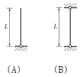
- 2.5tf
- 20tf
- 40tf
- 80tf
(정답률: 71%)
19. 그림과 같은 구조물은 몇 차 부정정 구조물인가?
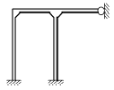
- 3
- 4
- 5
- 6
(정답률: 65%)
20. 그림과 같은 트러스에서 부재 AC의 부재력은?(원본 오류로 그림파일이 없습니다. 정답은 4번입니다. 추후 복원하여 두겠습니다.)
- 4tf (인장)
- 4tf (압축)
- 7.5tf (인장)
- 7.5tf (압축)
(정답률: 66%)
2과목: 측량학
21. 반지름 35km 이내 지역을 평면으로 가정하여 측량했을 경우 거리관측값의 정밀도는? (단, 지구반지름 6,370km이다.)
- 약 1/104
- 약 1/105
- 약 1/106
- 약 1/107
(정답률: 56%)
22. 수준측량에서 담장 PQ가 있어, P점에서 표척을 QP 방향으로 거꾸로 세워 아래 그림과 같은 결과를 얻었다. A점의 표고 HA=51.25m일 때 B점의 표고는?
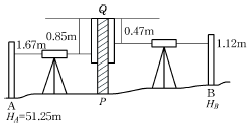
- 50.32m
- 52.18m
- 53.30m
- 55.36m
(정답률: 68%)
23. 클로소이드의 기본식은 A2=R ㆍ L을 사용한다. 이때 매개변수(parameter) A값을 A2으로 쓰는 이유는?
- 클로소이드의 나선형을 2차 곡선 형태로 구성하기위하여
- 도로에서의 완화곡선(클로소이드)은 2차원이기 때문에
- 양 변의 차원(dimension)을 일치시키기 위하여
- A값의 단위가 2차원이기 때문에
(정답률: 73%)
24. 한 변이 36m인 정삼각형(△ABC)의 면적을 BC변에 평행한 선(
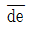
) 로 면적비 m : n = 1 : 1로 분할하기 위한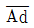
의 거리는?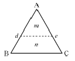
- 18.0m
- 21.0m
- 25.5m
- 27.5m
(정답률: 65%)
25. 어떤 노선을 수준측량하여 기고식 야장을 작성하였다. 측점 1, 2, 3, 4의 지반고 값으로 틀린 것은?
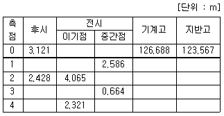
- 측점 1 : 124.102m
- 측점 2 : 122.623m
- 측점 3 : 124.384m
- 측점 4 : 122.730m
(정답률: 75%)
26. 노선의 길이가 2.5km인 결합트래버스 측량에서 폐합비를 1/2500로 제한할 때 허용되는 최대 폐합차는?
- 0.2m
- 0.4m
- 0.5m
- 1.0m
(정답률: 66%)
27. 평야지대의 어느 한 측점에서 중간 장애물이 없는 21km 떨어진 어떤 측점을 시준할 때 어떤 측점에 세울 측표의 최소 높이는 얼마 이상이어야 하는가? (단, 기차는 무시하고, 지구곡률반지름은 6,370km이다.)
- 5m
- 15m
- 25m
- 35m
(정답률: 29%)
28. 트래버스측량을 한 전체 연장이 2.5km이고 위거오차가 +0.48m, 경거오차가 –0.36m이었다면 폐합비는?
- 1/1167
- 1/2167
- 1/3167
- 1/4167
(정답률: 68%)
29. 사변형 삼각망은 보통 어느 측량에 사용되는가?
- 하천 조사측량을 하기 위한 골조측량
- 광대한 지역의 지형도를 작성하기 위한 골조측량
- 복잡한 지형측량을 하기 위한 골조측량
- 시가지와 같은 정밀을 필요로 하는 골조측량
(정답률: 68%)
30. 입체시에 의한 과고감에 대한 설명으로 옳지 않은 것은?
- 촬영기선이 긴 경우가 짧은 경우보다 커진다.
- 입체시를 할 경우 눈의 높이가 낮은 경우가 높은 경우보다 커진다.
- 촬영고도가 낮은 경우가 높은 경우보다 커진다.
- 초점거리가 짧은 경우가 긴 경우보다 커진다.
(정답률: 50%)
31. 지형측량 방법 중 기준점측량에 해당되지 않는 것은?
- 수준측량
- 삼각측량
- 트래버스측량
- 스타디아측량
(정답률: 75%)
32. 캔트(cant)의 크기가 C인 곡선에서 곡선반지름과 설계속도를 모두 2배로 하면 새로운 캔트의 크기는?
- 1/2C
- 2C
- 4C
- 8C
(정답률: 75%)
33. 축척이 1 : 25000인 지형도 1매를 1:5000 축척으로 재편집할 때 제작되는 지형도의 매수는?
- 25매
- 20매
- 15매
- 10매
(정답률: 80%)
34. 노선 중심선에 따른 횡단측량 결과, 1km+340m 지점은 흙쌓기 면적 50m2이고 1km+360m 지점은 흙깍기 면적 15m2으로 계산되었다. 양단면평균법을 사용한 두 지점간의 토량은?
- 흙깍기 토량 49.4m3
- 흙깍기 토량 494m3
- 흙쌓기 토량 350m3
- 흙쌓기 토량 494m3
(정답률: 53%)
35. 평판을 설치할 때 오차에 가장 큰 영향을 주는 것은?
- 방향맞추기(표정)
- 중심맞추기(구심)
- 수평맞추기(정준)
- 높이맞추기(표고)
(정답률: 66%)
36. 교점 (I.P.)의 위치가 기점으로부터 추가거리 325.18m이고, 곡선반지름(R) 200m, 교각(I) 41°00′인 단곡선을 편각법으로 설치하고자 할 때, 곡선시점(B.C.)의 위치는? (단, 중심말뚝 간격은 20m이다.)
- No.3+14.777m
- No.4+5.223m
- No.12+10.403m
- No.13+9.596m
(정답률: 66%)
37. R=80m, L=20m인 클로소이드의 종점 좌표를 단위클로소이드 표에서 찾아보니 x=0.499219, y=0.020810 이었다면 실제 X, Y좌표는?
- X=19.969m, Y=0.832m
- X=9.984m, Y=0.416m
- X=39.936m, Y=1.665m
- X=798.750m, Y=33.296m
(정답률: 57%)
38. 비행 고도 4,600m에서 초점거리 184mm 사진기로 촬영한 수직항공사진에서 길이 150m 교량은 얼마의 크기로 표현되는가?
- 6.0mm
- 7.5mm
- 8.0mm
- 8.5mm
(정답률: 57%)
39. 하천측량에서 평균유속을 구하기 위한 방법에 대한 설명으로 옳지 않은 것은? (단, 수면에서 수심의 20%, 40%, 60%, 80% 되는 곳의 유속을 각각 V0.2, V0.4, V0.6, V0.8 이라 한다.)
- 1점법은 V0.6을 평균유속으로 취하는 방법이다.
- 2점법은 V0.2, V0.6을 산술평균하여 평균유속으로 취하는 방법이다.
- 3점법은 1/4(V0.2+2V0.6+V0.8로 계산하여 평균유속을 취하는 방법이다.
- 4점법은
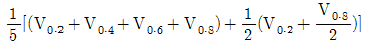
계산하여 평균유속을 취하는 방법이다.
(정답률: 56%)
40. 방대한 지역의 측량에 적합하며 동일 측점 수에 대하여 포괄면적이 가장 넓은 삼각망은?
- 유심 삼각망
- 사변형 삼각망
- 단열 삼각망
- 복합 삼각망
(정답률: 52%)
3과목: 수리학
41. 유량 14.13m3/s를 송수하기 위하여 안지름 3m의 주철관 980m를 설치할 경우, 적당한 관로의 경사는? (단, f = 0.03)
- 1/600
- 1/490
- 1/200
- 1/100
(정답률: 55%)
42. 정류에 대한 설명으로 옳지 않은 것은?
- 어느 단면에서 지속적으로 유속이 균일해야 한다.
- 흐름의 상태가 시간에 관계없이 일정하다.
- 유선과 유적선이 일치한다.
- 유선에 따라 유속이 일정하게 변한다.
(정답률: 54%)
43. 유관(stream tube)에 대한 설명으로 옳은 것은?
- 한 개의 유선(流線)으로 이루어지는 관을 말한다.
- 어떤 폐곡선(閉曲線)을 통과하는 여러 개의 유선으로 이루어지는 관을 말한다.
- 개방된 곡선을 통과하는 유선으로 이루어지는 평면을 말한다.
- 임의의 여러 유선으로 이루어지는 유동체를 말한다.
(정답률: 61%)
44. 그림과 같이 직경 8cm 분류가 35m/s의 속도로 관의 벽면에 부딪힌 후 최초의 흐름 방향에서 150°수평방향 변화를 하였다. 관의 벽면이 최초의 흐름 방향으로 10m/s의 속도로 이동할 때, 관벽면에 작용하는 힘은? (단, 무게 1kg=9.8N)
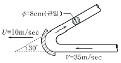
- 3.6kN
- 5.4kN
- 6.1kN
- 8.5kN
(정답률: 54%)
45. 다음의 비력(M)곡선에서 한계수심을 나타내는 것은?
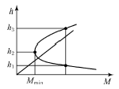
- h1
- h2
- h3
- h3 - h1
(정답률: 73%)
46. 다음 중 지하수 수리에서 Darcy법칙이 가장 잘 적용될 수 있는 Reynolds 수(Re)의 범위로 옳은 것은?
- Re < 2000
- Re < 500
- Re < 45
- Re < 4
(정답률: 49%)
47. 다음 중 사류의 조건이 아닌 것은? (단, hc : 한계수심, Vc : 한계유속, Ic : 한계경사, Fr : FroudeNumber, h : 수심, V : 유속, I : 경사)
- Fr ＞ 1
- h ＜ hc
- V ＞ Vc
- I ＜ Ic
(정답률: 62%)
48. 수면 아래 30m 지점의 압력을 수은주 높이로 표시한 것으로 옳은 것은? (단, 수은의 비중 = 13.596)
- 0.285m
- 2.21m
- 22.1m
- 28.5m
(정답률: 59%)
49. 내경 2cm의 관 내를 수온 20℃의 물이 25cm/s의 유속으로 흐를 때 흐름의 상태는? (단, 20℃의 동점성 계수는 0.01cm2/s 이다.)
- 사류
- 상류
- 층류
- 난류
(정답률: 63%)
50. 도수(跳水)에 관한 설명으로 옳지 않은 것은?
- 상류에서 사류로 변화될 때 발생된다.
- 사류에서 상류로 변화될 때 발생된다.
- 도수 전후의 충력치(비력)는 동일하다.
- 도수로 인해 때로는 막대한 에너지 손실도 유발된다.
(정답률: 60%)
51. 절대속도 U[m/s]로 움직이고 있는 판에 같은 방향으로 절대속도 V[m/s]의 분류가 흘러 판에 충돌하는 힘을 계산하는 식으로 옳은 것은? (단, ω0는 물의 단위중량, A는 통수 단면적)
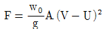
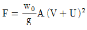
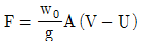
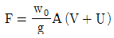
(정답률: 62%)
52. 층류와 난류를 구분할 수 있는 것은?
- Reynolds수
- 한계구배
- 한계수심
- Mach수
(정답률: 76%)
53. 오리피스에서 유출되는 실제유량은 Q=Ca∙Cv∙A∙V로 표현한다. 이 때 수축계수 Ca는? (단, A0는 수맥의최소 단면적, A는 오리피스의 단면적, V는 실제유속, VO는 이론유속)
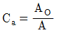
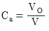
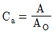
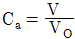
(정답률: 65%)
54. 수면의 높이가 일정한 저수지의 일부에 길이 30m의 월류 위어를 만들어 40m3/s의 물을 취수하기 위한 위어 마루부로부터의 상류측 수심(H)은? (단, C=1.0이고, 접근 유속은 무시한다.)
- 0.70m
- 0.75m
- 0.80m
- 0.85m
(정답률: 45%)
55. 부체의 경심(M), 부심(C), 무게중심(G)에 대하여 부체가 안정되기 위한 조건은?
 ＞ 0
＞ 0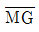
= 0 ＜ 0
＜ 0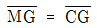
(정답률: 70%)
56. 물의 성질에 대한 설명으로 옳지 않은 것은?
- 압력이 증가하면 물의 압축계수(Cw)는 감소하고 체적탄성계수(Ew)는 증가한다.
- 내부마찰력이 큰 것은 내부마찰력이 작은 것보다 그 점성계수의 값이 크다.
- 물의 점성계수는 수온(℃)이 높을수록 그 값이 커진다.
- 공기에 접촉하는 액체의 포면장력은 온도가 상승하면 감소한다.
(정답률: 65%)
57. 수리학적으로 유리한 단면에 관한 설명 중 옳지 않은 것은?
- 동수반지름(경심)을 최대로 하는 단면이다.
- 일정한 단면적에 최대 유량을 흐르게 하는 단면이다.
- 가장 유리한 단면은 직각 이등변삼각형이다.
- 직사각형 수로에서는 수로 폭이 수심의 2배인 단면이다.
(정답률: 68%)
58. 모세관 현상에 의해서 물이 관내로 올라가는 높이(h)와 관의 직경(D)과의 관계로 옳은 것은?(오류 신고가 접수된 문제입니다. 반드시 정답과 해설을 확인하시기 바랍니다.)
- h∝D2
- h∝D
- h∝1/D
- h∝1/D2
(정답률: 41%)
59. Darcy-Weisbach의 마찰손실 공식에 대한 다음 설명 중 틀린 것은?
- 마찰 손실 수두는 관경에 반비례한다.
- 마찰 손실 수두는 관의 조도에 반비례한다.
- 마찰 손실 수두는 물의 점성에 비례한다.
- 마찰 손실 수두는 관의 길이에 비례한다.
(정답률: 63%)
60. 그림과 같은 불투수층에 도달하는 집수암거의 집수량은? (단, 투수계수는 k, 암거의 길이는 ℓ이며 양쪽 측면에서 유입됨)
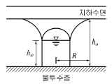
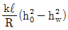
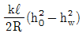
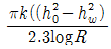
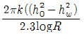
(정답률: 52%)
4과목: 철근콘크리트 및 강구조
61. 그림과 같은 단철근 직사각형 단면보에서 등가직사각형 응력블록의 깊이(a)는? (단, fy=350MPa, fck=28MPa)
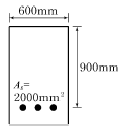
- 42mm
- 49mm
- 52mm
- 59mm
(정답률: 67%)
62. 복철근 단면으로 설계해야 할 경우를 설명한 것으로 틀린 것은?
- 구조물의 연성을 극대화 시킬 필요가 있을 때
- 정(+), 부(-) 모멘트를 번갈아가며 받을 때
- 처짐을 극소화시켜야 할 때
- 균형보 개념으로 계산된 보의 유효 깊이가 실제 설계된 보의 유효 깊이보다 작을 때
(정답률: 42%)
63. 다음 철근 중 철근콘크리트 부재의 전단철근으로 사용할 수 없는 것은?
- 주인장 철근에 45°의 각도로 설치되는 스터럽
- 주인장 철근에 30°의 각도로 설치되는 스터럽
- 주인장 철근에 30°의 각도로 구부린 굽힘철근
- 주인장 철근에 45°의 각도로 구부린 굽힘철근
(정답률: 65%)
64. fck=27MPa, fy=400MPa로 만들어지는 보에서 인장 이형철근으로 D29(공칭지름 28.6mm)를 사용한다면 기본 정착길이는? (단, 사용한 콘크리트는 보통 중량 콘크리트이다.)
- 1,321mm
- 1,387mm
- 1,423mm
- 1,486mm
(정답률: 66%)
65. 그림과 같은 독립확대기초에서 전단에 대한 위험단면의 둘레길이는 얼마인가? (단, 2방향 작용에 의하여 펀칭전단이 발생하는 경우)
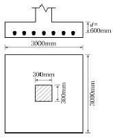
- 1,600mm
- 2,800mm
- 3,600mm
- 4,800mm
(정답률: 49%)
66. 강도설계법에서의 기본 가정을 설명한 것으로 틀린 것은?
- 철근과 콘크리트의 변형률은 중립축으로부터의 거리에 비례한다.
- 항복강도 fy이하에서의 철근의 응력은 그 변형률의 Es배로 한다.
- 콘크리트의 인장강도는 휨계산에서 무시한다.
- 콘크리트의 응력은 변형률에 탄성계수 Ec를 곱한 것으로 한다.
(정답률: 40%)
67. 그림과 같은 지간 6m인 단순보의 직사각형 단면에 계수하중 ω=30kN/m이 작용한다. 하연의 콘크리트 응력이 0이 될 때 PS강재에 작용하는 긴장력은? (단, PS 강재는 단면의 도심에 위치함)
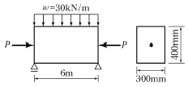
- 1,654kN
- 1,957kN
- 2,025kN
- 3,152kN
(정답률: 41%)
68. 길이 10m의 PS강선을 인장대에서 긴장 정착할 때 인장력의 감소량은 얼마인가? (단, 프리텐션 방식을 사용하며 긴장장치에서의 활동량은 △ℓ=3mm이고, 긴장재의 단면적 Ap=5mm2, Ep=2.0×105 MPa이다.)
- 200N
- 300N
- 400N
- 500N
(정답률: 53%)
69. 철근의 이음에 대한 설명으로 틀린 것은?
- 이음이 부재의 한 단면에 집중되도록 하는 것이 좋다.
- 철근은 이어대지 않는 것을 원칙으로 한다.
- 최대 인장응력이 작용하는 곳에서는 이음을 하지 않는 것이 좋다.
- D35를 초과하는 철근은 겹침이음 할 수 없다.
(정답률: 35%)
70. 다음 필렛 용접의 전단 응력은 얼마인가?
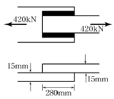
- 67.7MPa
- 70.7MPa
- 72.7MPa
- 75.7MPa
(정답률: 47%)
71. 전단설계에서 계수전단력이 87kN이고 이때 이를 지지할 철근콘크리트 보의 설계전단강도 øVc=kN 이라면 전단설계에 필요한 사항으로 옳은 것은?
- 실험에 의하여 보강의 필요유무를 결정한다.
- 전단철근 보강이 필요 없다.
- 최소전단철근만 보강한다.
- 보 단면을 재설계한다.
(정답률: 46%)
72. 강도 설계법에서 강도감소계수(ø)를 사용하는 목적으로 틀린 것은?
- 구조 해석할 때의 가정 및 계산의 단순화로 인해 야기될지 모르는 초과하중의 영향에 대비하기 위해서
- 재료 강도와 치수가 변동할 수 있으므로 부재의 강도 저하 확률에 대비한 여유를 위해서
- 부정확한 설계 방정식에 대비한 여유를 위해서
- 주어진 하중조건에 대한 부재의 연성도와 소요 신뢰도를 반영하기 위해서
(정답률: 39%)
73. 고정하중 10kN/m, 활하중 20kN/m의 등분포하중을 받는 경간 10m의 단순지지보에서 하중계수와 하중조합을 고려한 계수모멘트는?
- 325kNㆍm
- 430kNㆍm
- 485kNㆍm
- 550kNㆍm
(정답률: 60%)
74. 다음 프리스트레스의 손실 원인 중 프리스트레스도입 후 시간의 경과에 따라 생기는 것은?
- 마찰
- 정착단의 활동
- 콘크리트의 탄성수축
- 콘크리트의 크리프
(정답률: 66%)
75. 전체 깊이가 900mm를 초과하는 휨부재 복부의 양측면에 부재 축방향으로 배치하는 철근은?
- 수직스터럽
- 표피철근
- 배력철근
- 옵셋굽힘철근
(정답률: 64%)
76. 그림에 나타난 직사각형 단철근 보에서 전단철근이 부담하는 전단력(Vs)은 약 얼마인가? (단, 철근 D13을 수직스터럽(stirrup)으로 사용하며, 스터럽 간격은 200mm이다. 철근 D13 1본의 단면적은 127mm2, fck==28MPa, fy =350MPa)
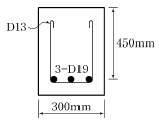
- 125kN
- 150kN
- 200kN
- 250kN
(정답률: 52%)
77. 아래 그림과 같은 단철근 직사각형 보의 균형철근비 ρb의 값은? (단, fck=21MPa , fy=280MPa 이다.)
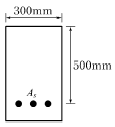
- 0.0369
- 0.0437
- 0.⑤24
- 0.0614
(정답률: 69%)
78. 위험단면에서 1방향 슬래브의 정모멘트 철근 및 부모멘트 철근의 중심 간격 규정으로 옳은 것은?
- 슬래브 두께의 2배 이하이어야 하고, 또한 300mm 이하로 하여야 한다.
- 슬래브 두께의 2배 이하이어야 하고, 또한 400mm 이하로 하여야 한다.
- 슬래브 두께의 3배 이하이어야 하고, 또한 300mm 이하로 하여야 한다.
- 슬래브 두께의 3배 이하이어야 하고, 또한 400mm 이하로 하여야 한다.
(정답률: 59%)
79. 아래 그림과 같은 강판에서 순폭은? (단, 강판에서의 구멍 지름(d)은 25mm이다.) (단위 : mm)
- 150mm
- 175mm
- 204mm
- 225mm
(정답률: 45%)
80. 강도설계법에서 보에 대한 등가직사각형 응력블록의 깊이 a=β1c에서 fck가 38MPa일 경우 β1의 값은?
- 0.717
- 0.766
- 0.78
- 0.815
(정답률: 63%)
5과목: 토질 및 기초
81. 어떤 점토 사면에 있어서 안정계수가 4이고, 단위 중량이 1.5t/m3, 점착력이 0.15kg/cm2일 때 한계고는?
- 4m
- 2.3m
- 2.5m
- 5m
(정답률: 52%)
82. 흙의 건조단위중량이 1.60g/cm3고 비중이 2.64인 흙의 간극비는?
- 0.42
- 0.60
- 0.65
- 0.64
(정답률: 51%)
83. 다음의 흙 중에서 2차 압밀량이 가장 큰 흙은?
- 모래
- 점토
- Silt
- 유기질토
(정답률: 47%)
84. 다음 중 얕은 기초는?
- Footing기초
- 말뚝기초
- Caisson기초
- Pier기초
(정답률: 70%)
85. 주동토압계수를 KA, 수동토압계수를 Kp, 정지토압계수를 Ko라 할 때 그 크기의 순서로 옳은 것은?
- KA ＞ Ko ＞ Kp
- Kp ＞ Ko ＞ KA
- Ko ＞ KA ＞ Kp
- Ko ＞ Kp ＞ KA
(정답률: 68%)
86. 다음 투수층에서 피에조미터를 꽂은 두 지점 사이의 동수경사(i)는 얼마인가? (단, 두 지점간의 수평거리는 50m이다.)
- 0.063
- 0.079
- 0.126
- 0.162
(정답률: 50%)
87. 도로지반의 평판재하실험에서 1.25mm 침하될 때 하중강도가 2.5kg/cm2일 때 지지력계수 K는?
- 2kg/cm2
- 20kg/cm2
- 1kg/cm2
- 10kg/cm2
(정답률: 58%)
88. 평판재하 시험이 끝나는 조건에 대한 설명으로 잘못된 것은?
- 침하량이 15mm에 달할 때
- 하중강도가 현장에서 예상되는 최대 접지압을 초과할 때
- 하중강도가 그 지반의 항복점을 넘을 때
- 완전히 침하가 멈출 때
(정답률: 50%)
89. 현장에서 채취한 흐트러지지 않은 포화 점토시료에 대해 일축압축강도 qu=0.8kg/cm2의 값을 얻었다. 이 흙의 점착력은?
- 0.2kg/cm2
- 0.25kg/cm2
- 0.3kg/cm2
- 0.4kg/cm2
(정답률: 61%)
90. 전단응력을 증가시키는 외적 요인이 아닌 것은?
- 간극수압의 증가
- 지진, 발파에 의한 충격
- 인장응력에 의한 균열의 발생
- 함수량 증가에 의한 단위중량 증가
(정답률: 48%)
91. 다음 그림과 같은 Sampler에서 면적비는 얼마인가? (단, Ds=7.2cm, De=7.0cm, Dω=7.5cm)
- 5.9%
- 12.7%
- 5.8%
- 14.8%
(정답률: 56%)
92. 어떤 점성토에 수직응력 40kg/ω를 가하여 전단시켰다. 전단면상의 공극수압이 10kg/cm2고 유효응력에 대한 점착력, 내부마찰각이 각각 0.2kg/cm2, 20°이면 전단강도는?
- 6.4kg/cm2
- 10.4kg/cm2
- 11.1kg/cm2
- 18.4kg/cm2
(정답률: 54%)
93. 그림과 같은 지표면에 10t의 집중하중이 작용했을때 작용점의 직하 3m 지점에서 이 하중에 의한 연직응력은?
- 0.422t/m2
- 0.531t/m2
- 0.641t/m2
- 0.708t/m2
(정답률: 43%)
94. 함수비 20%의 자연상태의 흙 2,400g을 함수비 25%로 하고자 한다면 추가해야 할 물의 양은?
- 100g
- 120g
- 400g
- 500g
(정답률: 46%)
95. 어느 흙댐의 동수구배가 0.8, 흙의 비중이 2.65, 함수비 40%인 포화토인 경우 분사현상에 대한 안전율은?
- 0.8
- 1.0
- 1.2
- 1.4
(정답률: 36%)
96. 그림과 같이 2개층으로 구성된 지반에 대해 수평방향으로 등가투수계수는?(오류 신고가 접수된 문제입니다. 반드시 정답과 해설을 확인하시기 바랍니다.)
- 3.89×10-4cm/sec
- 7.78×10-4cm/sec
- 1.57×10-3cm/sec
- 3.14×10-3cm/sec
(정답률: 39%)
97. 다음 중 점성토 지반의 개량공법으로 부적당한 것은?
- 치환 공법
- Sand drain공법
- 바이브로 플로테이션 공법
- 다짐모래말뚝 공법
(정답률: 70%)
98. 다짐에 대한 설명으로 틀린 것은?
- 조립토는 세립토보다 최적함수비가 작다.
- 조립토는 세립토보다 최대건조밀도가 높다.
- 조립토는 세립토보다 다짐곡선의 기울기가 급하다.
- 다짐에너지가 클수록 최대 건조밀도는 낮아진다.
(정답률: 59%)
99. 10개의 무리말뚝 기초에 있어서 효율이 0.8, 단항으로 계산한 말뚝 1개의 허용지지력이 10t일 때 군항의 허용지지력은?
- 50t
- 80t
- 100t
- 125t
(정답률: 73%)
100. 다음 중 얕은 기초의 지지력에 영향을 미치지 않는 것은?
- 지반의 경사
- 기초의 깊이
- 기초의 두께
- 기초의 형상
(정답률: 55%)
6과목: 상하수도공학
101. 응집제로서 가격이 저렴하고 탁도, 세균, 조류 등의 거의 모든 현탁성 물질 또는 부유물의 제거에 유효하며, 무독성 때문에 대량으로 주입할 수 있으며 부식성이 없는 결정을 갖는 응집제는?
- 황산알루미늄
- 암모늄 명반
- 황산 제1철
- 폴리염화 알루미늄
(정답률: 68%)
102. 하수도의 구성에 대한 설명으로 옳지 않은 것은?
- 배제방식은 합류식과 분류식으로 대별할 수 있다.
- 처리시설은 물리적, 생물학적, 화학적 시설로 대별할 수 있다.
- 방류시설은 자연유하와 펌프시설에 의한 강제유하로 구분할 수 있다.
- 슬러지 처리방법에는 침전, 여과, 소독 등이 주로 사용된다.
(정답률: 51%)
103. 염소소독에 대한 설명으로 옳지 않은 것은?
- 유리잔류염소란 염소를 물에 주입하여 가수분해된 차아 염소산(HOCI)을 말한다.
- 결합잔류염소는 유리염소보다 소독효과가 우수하다.
- 차아염소산(HOCI)은 낮은 pH에서 많이 발생하고 살균력은 차아염소산이온(OCℓ-)보다 강하다.
- 결합잔류염소란 유기성 질소화합물을 포함한 물에 염소를 주입할 때 발생되는 클로라민을 말한다.
(정답률: 45%)
104. 펌프에 대한 설명으로 옳지 않은 것은?
- 펌프는 가능한 최고효율점 부근에서 운전하도록 대수 및 용량을 정한다.
- 펌프의 설치대수는 유지관리상 편리하도록 될 수 있는 대로 적게 하고 동일 용량의 것으로 한다.
- 과잉운전방지와 과잉운전에 따른 에너지소비량이 절감될 수 있도록 한다.
- 펌프의 용량이 작을수록 효율이 높으므로 가능한 소용량의 것으로 한다.
(정답률: 73%)
1⑤. 배수면적 0.35km2, 강우강도 , 유입시간 7분, 유출계수 C=0.7, 하수관내 유속 1m/s, 하수관 길이 500m인 경우 우수관의 통수 단면적은? (단, t의 단위는 [분]이고, 계획우수량은 합리식에 의함)
- 8.5m2
- 6.4m2
- 5.1m2
- 4.2m2
(정답률: 56%)
106. 유입하수량 10,000m3/day, 유입 BOD농도 120mg/L, 폭기조 내 MLSS농도 2,000mg/L, BOD부하 0.5kgBOD /kgMLSS ㆍ day일 때 폭기조의 용적은?
- 240m3
- 600m3
- 1,000m3
- 1,200m3
(정답률: 43%)
107. 우리나라 하수도 계획의 목표년도는 원칙적으로 몇 년을 기준으로 하는가?
- 20년
- 15년
- 10년
- 5년
(정답률: 74%)
108. 하수배제 방식에 대한 설명으로 옳은 것은?
- 합류식 하수배제 방식은 강우초기에 도로 위의 오염 물질이 직접 하천으로 유입된다.
- 합류식 하수관거는 청천시(晴天時) 관거 내 퇴적량이 분류식 하수관거에 비하여 많다.
- 분류식 하수관거는 관거내의 검사가 편리하고 환기가 잘되는 이점이 있다.
- 분류식 하수관거에서는 우천시 일정한 유량 이상이 되면 오수가 월류한다.
(정답률: 50%)
109. 수원의 구비조건으로 옳지 않은 것은?
- 수질이 좋아야 한다.
- 가능한 한 높은 곳에 위치한 것이 좋다.
- 계절적으로 수량 변동이 큰 것이 유리하다.
- 소비지로부터 가까운 곳에 위치하여야 한다.
(정답률: 71%)
110. 상수의 도수방식에 관한 설명으로 옳지 않은 것은?
- 도수방식은 지형과 지세 등에 따라 자연유하식, 펌프가압식 및 병용식이 있다.
- 도수방식은 취수시설과 정수시설간의 표고, 노선의 입지조건 등을 종합적으로 고려하여 결정한다.
- 수로의 형식은 관수로식과 개수로식이 있지만, 펌프 가압식에서는 개수로식을 택한다.
- 자연유하식은 지형과 지세가 비교적 평탄하고 시점과 종점간의 유효낙차가 충분한 경우에 주로 이용된다.
(정답률: 51%)
111. 펌프와 부속설비의 설치에 관한 설명으로 옳지 않은 것은?
- 펌프의 흡입관은 공기가 갇히지 않도록 배관한다.
- 필요에 따라 축봉용, 냉각용, 윤활용 등의 급수설비를 설치한다.
- 펌프의 운전상태를 알기 위하여 펌프 흡입측에는 압력계를, 토출측에는 진공계를 설치한다.
- 흡상식 펌프에서 풋밸브(foot valve)를 설치하지 않을 경우에는 마중물용의 진공펌프를 설치한다.
(정답률: 46%)
112. 상수도 계통도의 순서로 옳은 것은?
- 집수 및 취수 → 도수 → 정수 → 송수 → 배수 → 급수
- 집수 및 취수 → 배수 → 정수 → 송수 → 도수 → 급수
- 집수 및 취수 → 도수 → 정수 → 급수 → 배수 → 송수
- 집수 및 취수 → 배수 → 정수 → 급수 → 도수 → 송수
(정답률: 78%)
113. 하수관거의 관정부식(crown corrosion)의 주된 원인물질은?
- N 화합물
- S 화합물
- Ca 화합물
- Fe 화합물
(정답률: 73%)
114. 토압계산시 널리 사용되는 마스톤(Marston)공식에서 관이 받는 하중(W), 매설토의 깊이와 종류에 의하여 결정되는 상수(C), 매설토의 단위중량(γ), 폭요소(B)와의 관계식으로 옳은 것은? (단, B : 폭요소로서 관의 상부 90°부분에서의 관매설을 위하여 굴토한 도랑의 폭)
- W=CγB
- W=CγB2
(정답률: 50%)
115. 활성슬러지법에서 MLSS에 대한 설명으로 옳은 것은?
- 방류수 중의 부유물질
- 폐수 중의 부유물질
- 폭기조 중의 부유물질
- 반송슬러지 중의 부유물질
(정답률: 59%)
116. 정수장 급속여과지에서 여과모래의 유효경이 0.45~0.7mm의 범위인 경우에 모래층의 표준 두께는?
- 1~5cm
- 10~20cm
- 40~50cm
- 60~70cm
(정답률: 37%)
117. 상수도시설 중 침사지에 대한 설명으로 옳지 않은 것은?
- 침사지의 길이는 폭의 3~8배를 표준으로 한다.
- 침사지내에서의 평균유속은 10~20cm/s를 표준으로 한다.
- 침사지의 위치는 가능한 한 취수구에 가까워야 한다.
- 유입 및 유출구에는 제수밸브 혹은 슬루스 게이트를 설치한다.
(정답률: 55%)
118. 상수관망의 해석에 사용되는 방법과 가장 밀접한 관련이 있는 것은?
- 뉴톤 법칙
- 토리첼리의 정리
- 하디 크로스법
- 베르누이정리
(정답률: 64%)
119. 오수관거 설계시 계획시간 최대오수량에 대한 최소 및 최대유속은?
- 최소 : 0.6m/s, 최대 : 3.0m/s
- 최소 : 0.6m/s, 최대 : 5.0m/s
- 최소 : 0.8m/s, 최대 : 3.0m/s
- 최소 : 0.8m/s, 최대 : 5.0m/s
(정답률: 59%)
120. 슬러지 부피지수(SVI)가 150인 활성슬러지법에 의한 처리조건에서 슬러지 밀도지표(SDI)는?
- 0.67
- 6.67
- 66.67
- 666.67
(정답률: 53%)